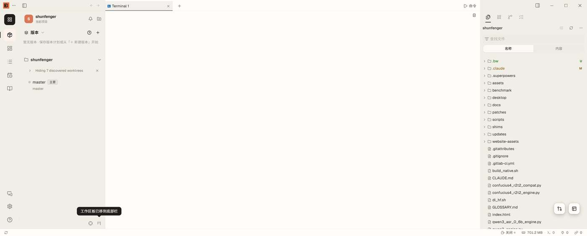
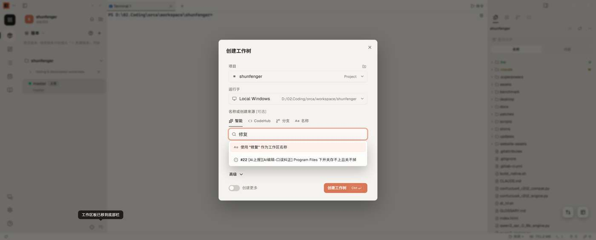
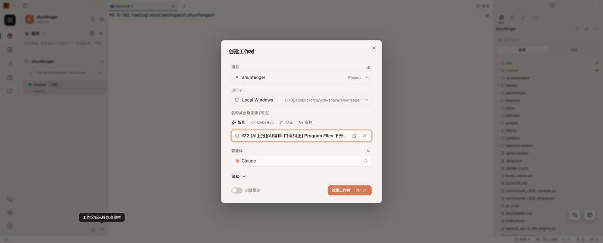

真实 Electron + 真实 codehub-cli + 真实 CodeHub 仓库（隔离 profile，未触碰用户项目/profile）· Issue #734 · 2026-11-19
注册真实仓库 D:/02.Coding/orca/workspace/shunfenger（origin 指向内网 CodeHub），主进程识别 gitRemoteIdentity.canonicalKey = szv-open.codehub.huawei.com/innersource/shunfenger_G/shunfenger。创建器来源标签行随之为 智能 / CodeHub / 分支 / 名称，不再出现 GitHub。

在来源输入框输入关键词「修复」，服务端 codehub-cli search issue 返回真实 CodeHub 议题，候选中出现真实议题条目。

选中真实议题后生成来源标记（#编号 + 标题），作为工作树名称与通用任务关联来源。

| 门禁 | 结果 |
|---|---|
| 受影响单测（8 文件） | 102 passed |
| 测试总量闸门 | 220 / 220 |
| 前端 + 主进程 tsc | 通过 |
| oxlint / 反冗余 / oxfmt | 通过 |
| 本地化覆盖/提取、文档链接 | 通过 |
codehub-cli 凭据复制进该临时 HOME 使真实查询可用，结束后删除。issue list 带 label/scope 时不走关键词搜索属既有 CLI 边界。typecheck 的 e2e/cloud 工程存在与本改动无关的既有类型错误，未计入通过。